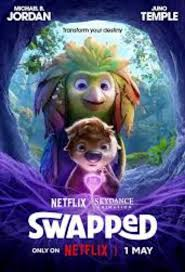
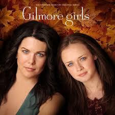
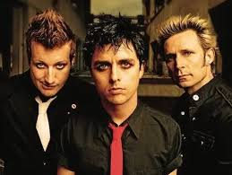
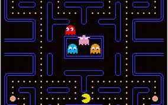
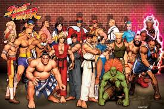

Sinopse: Em Como Mágica, um pássaro e uma pequena criatura da floresta precisam lidar com suas diferenças quando um incidente coloca um na pele (ou nas penas) do outro. A trama se passa num reino animal chamado Vale e acompanha dois animais que são inimigos por natureza, mas depois que trocam de corpo precisam se unir para sobreviver à nova vida e rotina na selva.

Gilmore Girls é uma comédia dramática focada na relação próxima e acelerada entre Lorelai Gilmore, uma mãe solteira independente, e sua filha adolescente, Rory. Situada em Stars Hollow, Connecticut, a série acompanha a criação de Rory, os romances de ambas e a reconciliação de Lorelai com seus pais ricos.
Um cirurgião plástico passa anos fingindo ser casado, até que conhece a mulher perfeita. Agora, ele precisa que sua assistente se passe por sua futura ex.

Principais músicas: "American Idiot", "Boulevard of Broken Dreams", "Wake Me Up When September Ends".
Principais músicas: "Proibida pra Mim", "Zóio de Lula", "Só os Loucos Sabem".
Principais músicas: "Tá Escrito", "Deixa Acontecer", "Coração Radiante".

Jogo de arcade clássico onde o jogador controla Pac Man, uma criatura amarela que deve comer todos os pontos em um labirinto enquanto evita fantasmas.
Jogo de plataforma icônico onde o jogador controla Mario, um personagem vermelho com capacidade de pular e derrotar inimigos.

Jogo de luta icônico onde o jogador controla personagens famosos, como Ryu e Ken, em batalhas contra inimigos.